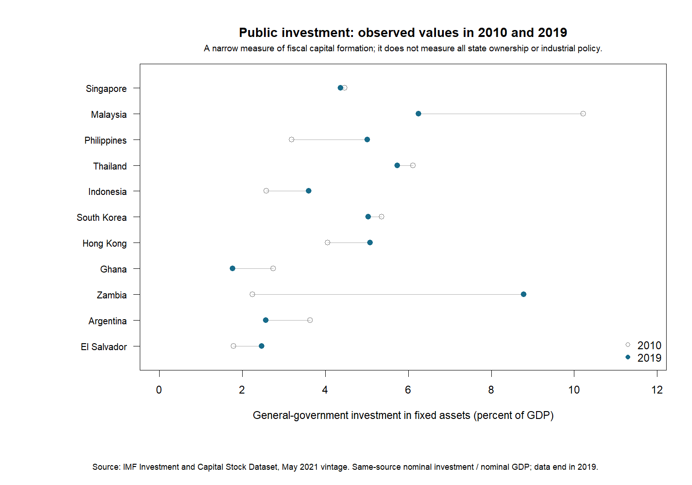
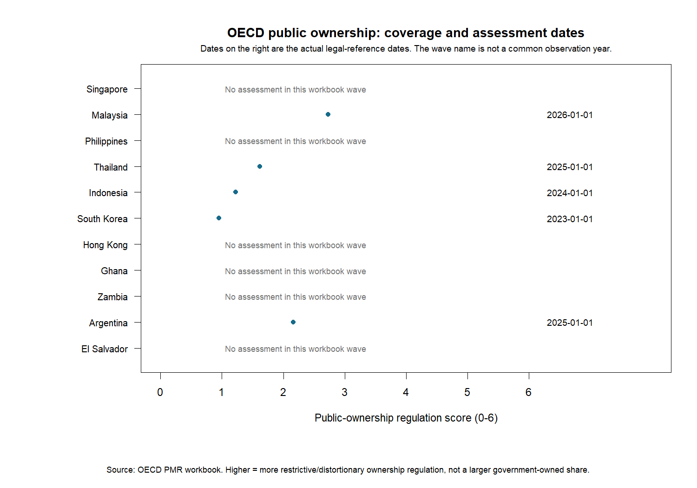
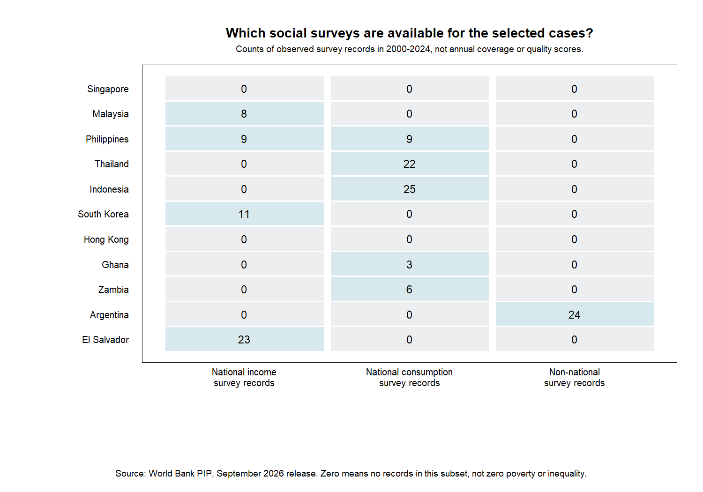
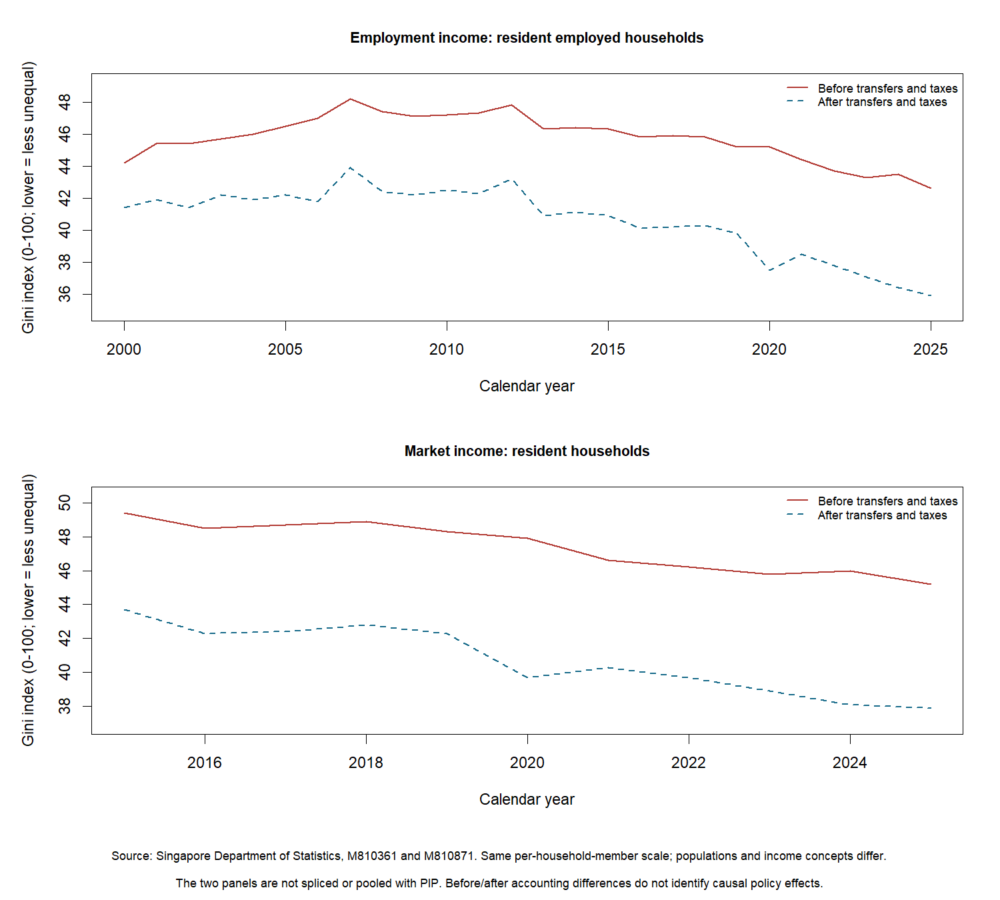
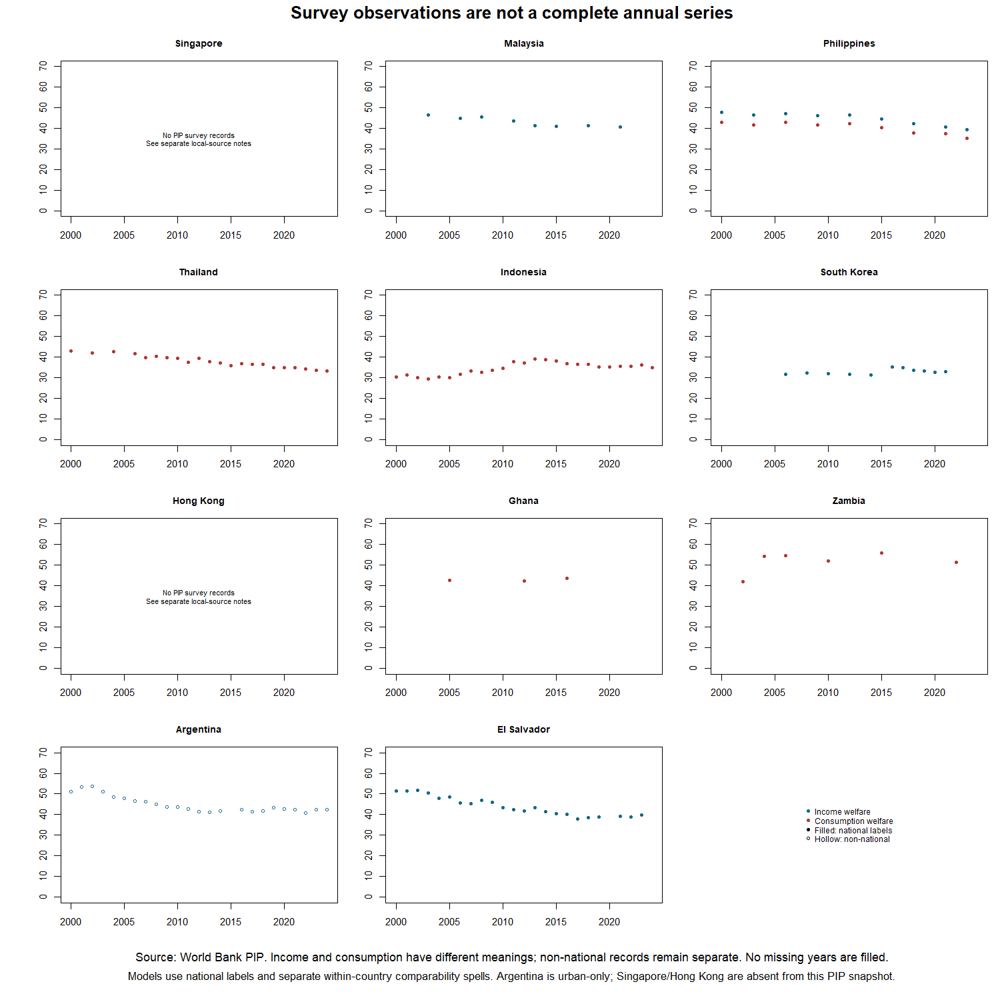
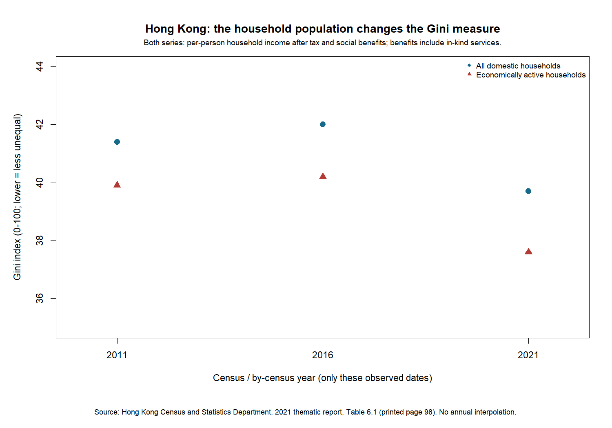

Latest research: Ownership/direct control and more comparable social measures.
What changed: The project now measures general-government investment, audits OECD public-ownership assessments, and uses survey-level definitions for poverty and inequality. These sources answer narrower questions. They do not complete a universal state-intervention index or a fully comparable social score.
| Case | IMF public investment | OECD ownership assessments | PIP social-survey status |
|---|---|---|---|
| Singapore | 50 observed years through 2019 | 0 assessments; actual dates retained | Not covered in this PIP snapshot |
| Malaysia | 50 observed years through 2019 | 2 assessments; actual dates retained | Nationally labeled survey observations available |
| Philippines | 50 observed years through 2019 | 1 assessments; actual dates retained | Nationally labeled survey observations available |
| Thailand | 50 observed years through 2019 | 1 assessments; actual dates retained | Nationally labeled survey observations available |
| Indonesia | 50 observed years through 2019 | 2 assessments; actual dates retained | Nationally labeled survey observations available |
| South Korea | 50 observed years through 2019 | 2 assessments; actual dates retained | Nationally labeled survey observations available |
| Hong Kong | 50 observed years through 2019 | 0 assessments; actual dates retained | Not covered in this PIP snapshot |
| Ghana | 50 observed years through 2019 | 0 assessments; actual dates retained | Nationally labeled survey observations available |
| Zambia | 28 observed years through 2019 | 0 assessments; actual dates retained | Nationally labeled survey observations available |
| Argentina | 50 observed years through 2019 | 2 assessments; actual dates retained | Only non-national coverage; excluded from national models |
| El Salvador | 50 observed years through 2019 | 0 assessments; actual dates retained | Nationally labeled survey observations available |
Full definitions, dates and source labels are in the labeled coverage table. “Not covered” means absent from this downloaded source, not that the outcome is zero.






6 of 6 main matched-sample public-investment estimates have 95% confidence intervals that include zero. These specifications do not establish a reliable direction of association; this is not proof that the true effect is zero.
Each row estimates the association with one additional percentage point of GDP in previous-year government investment. Brackets show country-clustered 95% confidence intervals. Units differ by outcome. These are not causal effects.
| Outcome | Survey concept | Coefficient [95% interval] | Observations / economies |
|---|---|---|---|
| Real GDP per capita growth (percentage points) | Not applicable | 0.030 [-0.099, 0.158] | 2,534 / 151 |
| Living standards (provisional category score) | Not applicable | 0.0003 [-0.0031, 0.0037] | 2,522 / 151 |
| Gini inequality (0-100 points) | income | -0.190 [-0.435, 0.055] | 841 / 60 |
| Poverty below USD 3/day (percentage points; 2021 PPP) | income | -0.128 [-0.333, 0.077] | 841 / 60 |
| Gini inequality (0-100 points) | consumption | 0.161 [-0.051, 0.373] | 374 / 49 |
| Poverty below USD 3/day (percentage points; 2021 PPP) | consumption | -0.368 [-1.118, 0.382] | 374 / 49 |
For Gini and poverty, a positive coefficient means more measured inequality or poverty, not a better outcome. Missing-data sample loss, alternative specifications and collinearity diagnostics are exported.
Sources: IMF Investment and Capital Stock Dataset (May 2021), OECD PMR workbook, World Bank PIP (September 2026 release, 2021 PPP), and Singapore Department of Statistics. These are research transformations, not official interpretations by the providers.